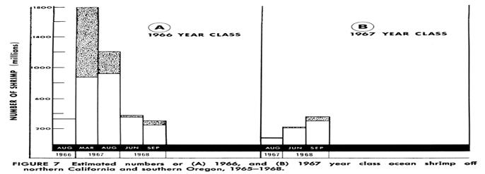
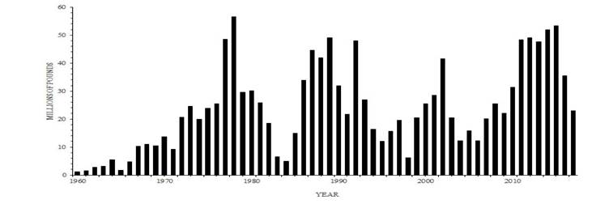
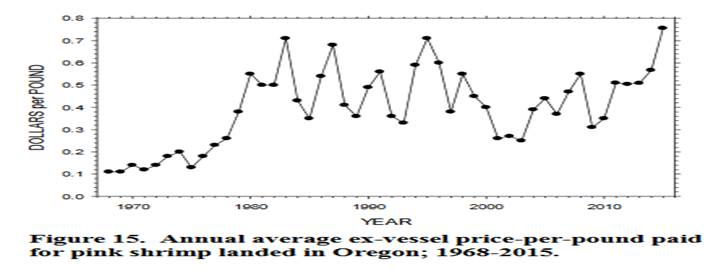
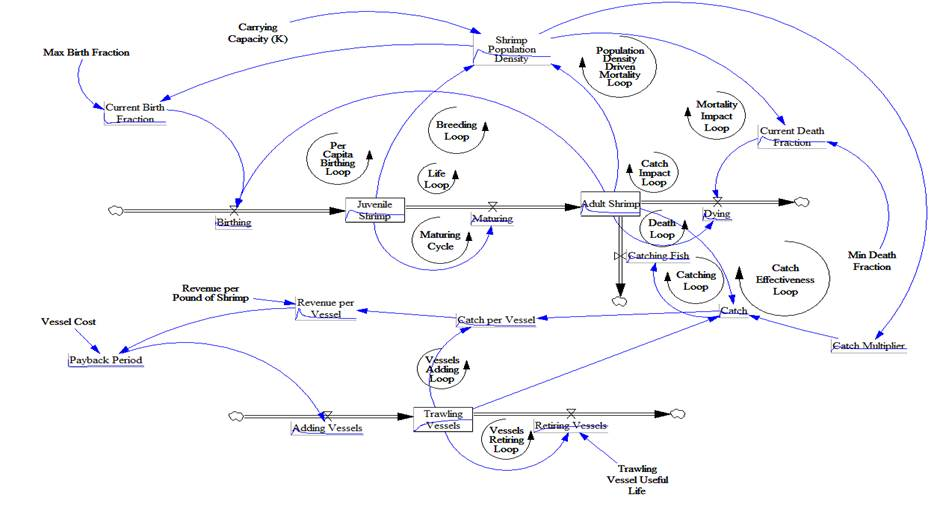
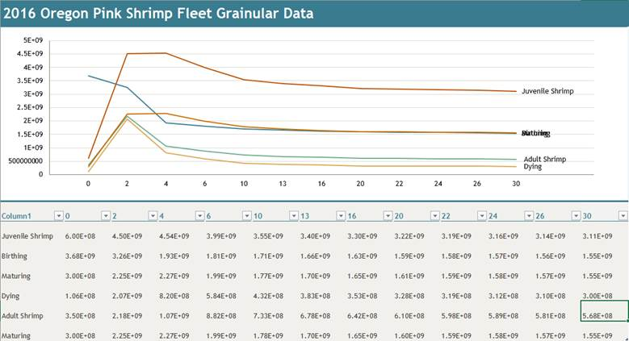
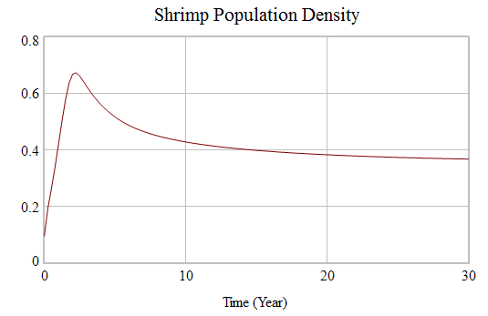
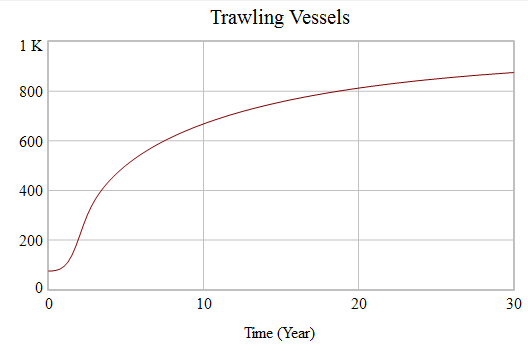

Oregon
Pink Shrimp Fishery Model
Define/articulate the
Issue/Problem (focus the effort)
explicit purpose
Oregon’s
Pink Shrimp fishing policies historically had regulated population by
way of amount per boat, limiting the number of boast licenses, and season
restrictions. They also mandate shrimp that average 160 per pound or larger are
the minimum size. This causes the fishermen to move out of areas with higher
densities of juveniles. I would like to explore the ramifications of the
removal of the Trawling Vessel Number Restriction.
Oregon’s
Pink Shrimp (Pandalus jordani)
fishing fleet is comprised of 75 Double Rig Trawlers, (labeled “Vessels” in
this model), which total 1051 trips from April 1 until October31. This allows
the shrimps to repopulate during mating season which lasts from November until
March.



I will measure Adult Shrimp and Revenue per Vessel to reflect
the impact of Carrying Capacity disrupting policy changes.
I
hypothesize that the depletion of Carrying Capacity will negatively affect both
shrimp populations as well as Revenue per Vessel.
Shrimp - Birth through Death
This is the life cycle of shrimp within a population. They are born as Juvenile Shrimp and mature 1 year to Adult Shrimp, whereupon they become breeding candidates. Not all adults breed at all times, so we have set that to about ½ of the Adults successfully procreate in a breeding season.
Vessel - Purchase through Retirement
This is the “life cycle” of a Trawling Vessel. The bank loans money with a payback period attached, and the vessel is purchased and set to work. The Vessel will last about 20 years and be retired. I am not tracking every vessel, I am simply retiring 1/20 of the vessels per year. That is to say: Trawling Vessels/20.
o Maturing Cycle
Juvenile Fish à Maturing
o Per Capita Birthing Cycle
Juvenile Fish à Fish Population Density à Current Birth Fraction à Birthing à
o Life Cycle
Juvenile Fish à Maturing à Adult Fish à Birthing à
o Mortality Impact Cycle
Juvenile Fish à Fish Population Density à Current Death Fraction à Dying à Adult Fish à Birthing à
o Breeding Cycle
Juvenile Fish à Maturing à Adult Fish à Fish Population Density à Current Birth Fraction à Birthing à
o Catch Impact Cycle
Juvenile Fish à Fish Population Density à Catch Multiplier à Catch à Catching Fish à Adult Fish à Birthing à
o Death Cycle
Adult Fish à Dying
o Catching Cycle
Adult Fish à Catch à Catching Fish
o Catch Effectiveness Cycle
Adult Fish à Fish Population Density à Catch Multiplier à Catch à Catching Fish à
o Population Density Driven Mortality Cycle
Fish Population Density à Current Death Fraction à Dying à Adult Fish à
o Vessels Retiring Cycle
Fishing Vessels à Retiring Vessels à
o Vessels Adding Cycle
Fishing Vessels à Catch à Catch per Vessel à Revenue per Vessel à Payback Period à Adding Vessels à
specification and calibration
(determine equations & parameters)
·
Total Simulation Time = 30 years
·
Step Time = 0.25 year
·
Carrying Capacity, K=1e10
·
Initial shrimp population, N(t=0) = 95e7
·
Initial Juveniles = 6e8
·
Initial Adults = 3.5e7
·
Max. Birthing Fraction = 1
·
Minimum Death Rate = 1/4 (at least 25%
of the Shrimp population dies in any time period)
·
Shrimp Population Density: (Adult Shrimp
+ Juvenile Shrimp)/"Carrying Capacity (K)"
·
Current Birthing Fraction = Max
Birth Fraction/Shrimp Population Density
·
Birthing = (Adult Shrimp*Max Birth
Fraction)
·
Juvenile Shrimp = Birthing-Maturing
·
Maturing = Juvenile Shrimp/2
·
Time for Shrimp to mature: 2 years
(if you use two storages)
·
Adult Shrimp = Adult Shrimp+Maturing
- Catching Shrimp – Dying
·
Catch = Adult Shrimp*Trawling Vessels*Catch
Multiplier
·
Dying = Adult Shrimp*Current Death
Fraction
·
Min Death Fraction = 0.25
·
Current Death Fraction = Min Death
Fraction*EXP(Shrimp Population Density*2)
·
Payback Period = Vessel Cost/Revenue
per Vessel
·
Initial number of Vessels: 75
·
Vessels (Current number of active
Vessels) = Adding Vessels-Retiring Vessels
·
Cost of new vessel: $100,000
·
Vessel useful life = 20 years
·
Retiring Vessels = Trawling Vessels/Trawling
Vessel Useful Life
·
Maturing = Juvenile Shrimp/2
·
Dying = Adult Shrimp*Current Death
Fraction
·
Catching Shrimp= Catch
·
Adding Vessel = 10/Payback Period
·
Retiring Vessels = Trawling Vessels/Trawling
Vessel Useful Life
·
Catch Multiplier = Shrimp Population
Density*0.01



Test Model
·
I have tested and revised almost all
equations. They should now be functioning correctly together.
·
I have increased the initial fish
population to equal 9E9, and the same behavior was observed
·
I have decreased the initial fish
population to equal 1000, and the same behavior was observed
·
I am not seeing any behavior which I
find surprising.
We are
seeing a classic rapid population growth to fill an available habitat and an
equilibrium.
I have run the model and my hypothesis seems to hold true.
challenge the boundaries (extensive & intensive)
·
I have changed the initial values of
Juveniles and Adults, as well as the Maturation rate.
o Changing Adults to 1E8 and Juveniles to 5E8 gave similar
results. The equilibrium point remained the same.
o Changing Adults to 5E8 and Juveniles to 1E8 gave similar
results, the equilibrium point remained the same.
o Changing Maturation Rate to Juvenile Shrimp/3 gave me an
equilibrium point that was higher in Juveniles and lower in Adults, but that
was expected
Model Application & Transfer
·
policy/theory
o
The operating policy set is simply
that shrimp are born at a rate commensurate with the population density and the
Adult breeding population. The breeding population is no more than 50% of the
Adult population, and the Maturation Rate is set to allow for 50% of the
Juvenile population to become Adults. The death rate is commensurate with the
population density and the Adult population. We are unrealistically assuming
that no Juveniles die.
·
Make Learning Available
(communicate)
Commercial Pink Shrimp Landings. (2017). Retrieved
March 22, 2018, from http://www.dfw.state.or.us/MRP/shellfish/commercial/shrimp/landings.asp
Gotshall, Daniel W. “DEDICATION.” Population
Size, Mortality Rates, and Growth Rates of Northern California Ocean Shrimp,
Pandalus Jordani, 1965 Through 1968, State of California, Resources Agency,
Department of Fish and Game, 1972,
content.cdlib.org/view?docId=kt7580059c&brand=calisphere&doc.view=entire_text.
Hanna, Bob, and Steve Jones. “27th Annual Pink Shrimp Review.” Annual Pink Shrimp Review, Oregon Department of Fish and Wildlife, 15 Feb. 2016, digital.osl.state.or.us/islandora/object/osl:44313/datastream/OBJ/view.